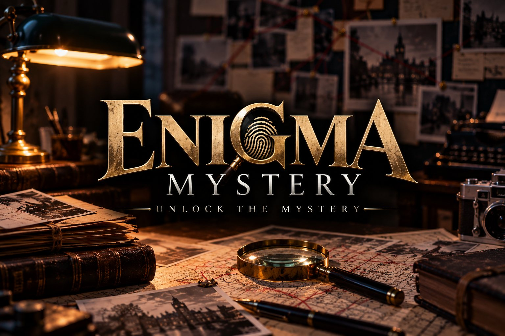
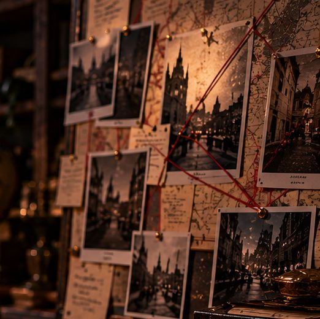

The evidence board
Four leads, one name.
Online on your screen, outdoors on foot, on paper with a pencil, or together with the little ones. Pull a thread.
Online
Mystery Games
Play in your browser
21 cases: stories, 3D escape rooms, logic puzzles and calm building games.
- Where
- On your phone or computer
- Time
- 20 minutes to a few evenings
- Price
- One case of every kind free, the rest with Pro (€3.99 once)

Outdoors
Mystery Walks
Walk the case yourself
A murder case you solve outside. The town around you becomes the crime scene.
- Where
- Anywhere, phone in hand
- Time
- About ninety minutes
- Price
- Trial walk free; stories and group pass sold separately
On paper
Mystery Puzzles
Puzzle with a pencil
Printed puzzle books full of murder cases, from easy to hard.
- Where
- At the table, on the train, on holiday
- Time
- 100 puzzles per book
- Now
- Free trial floor online; books to follow
For the little ones
Mini Mystery
Sleuthing without murder
Riddles and treasure hunts for young detectives, on a site of its own.
- Where
- minimystery.nl
- For whom
- Children, together with a grown-up
- Price
- See the Mini site